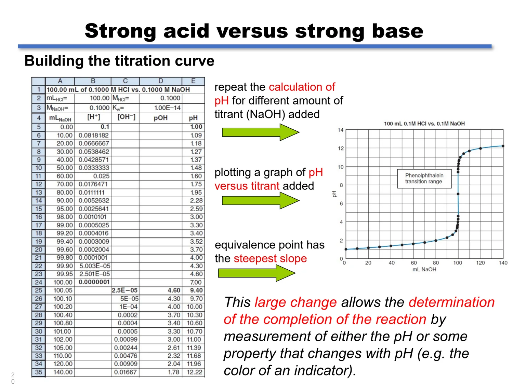
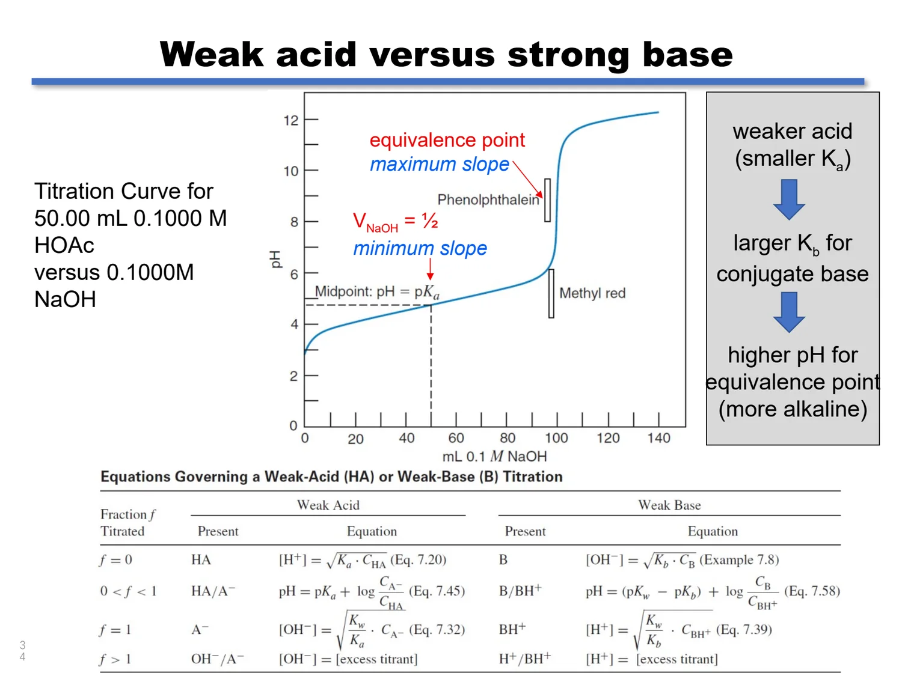
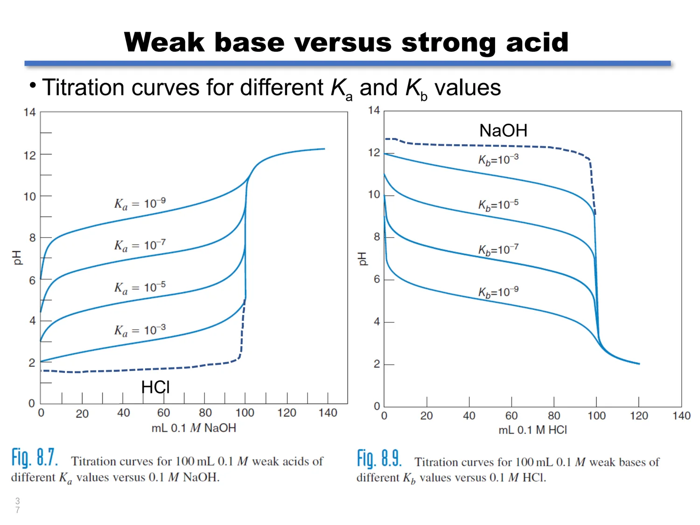
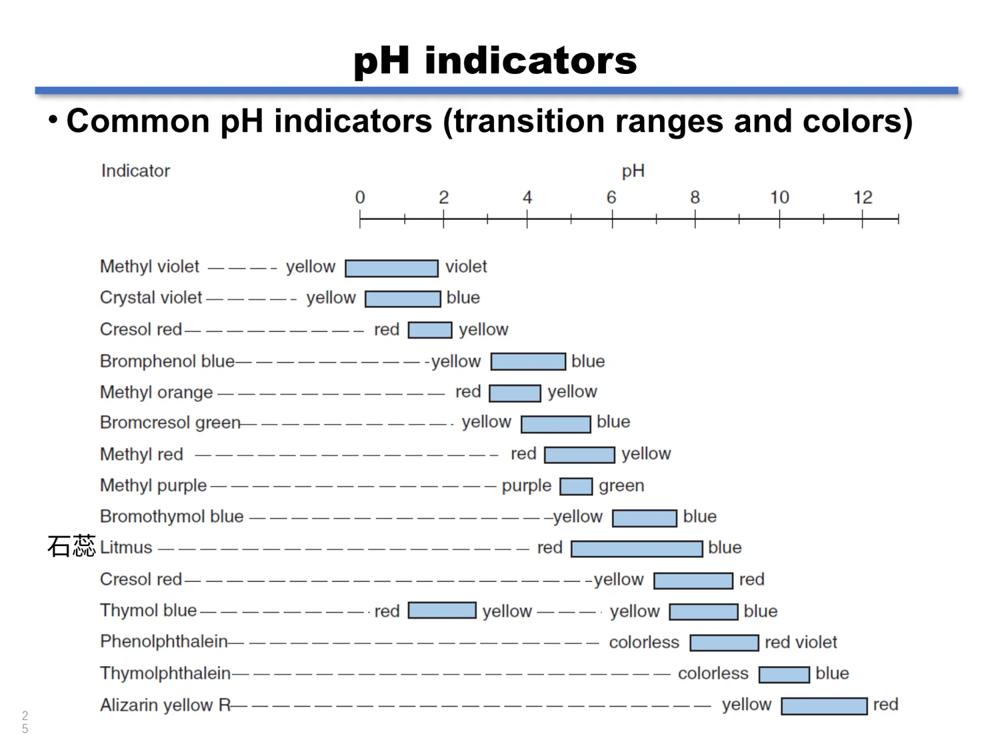
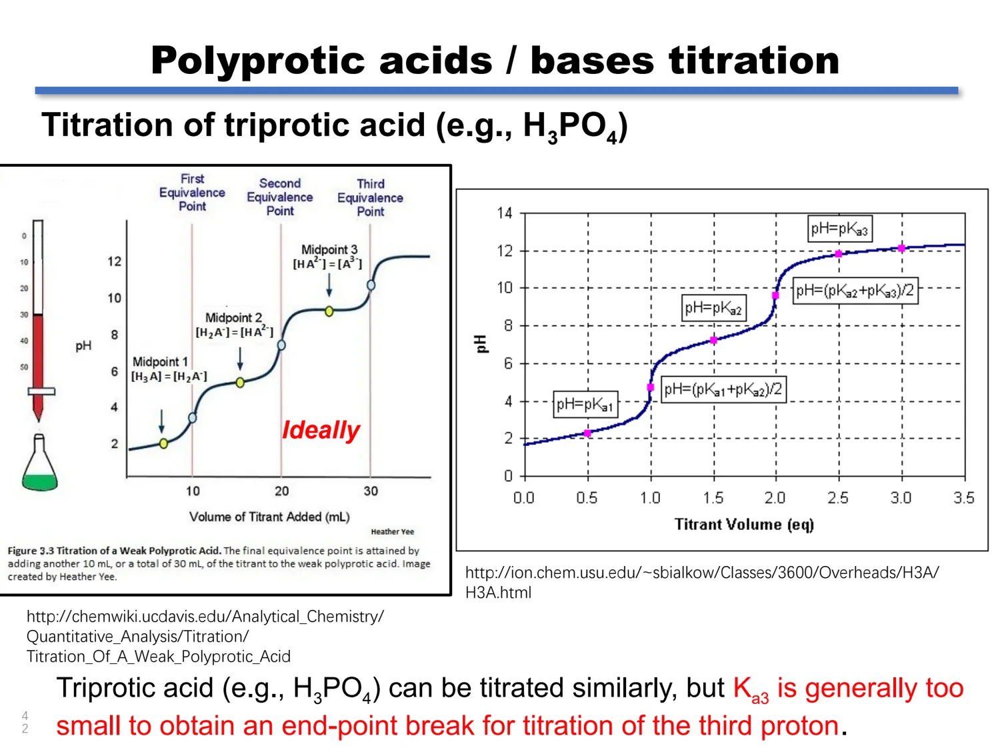

04 · ACID-BASE TITRATION
酸碱滴定
把第 3 章的平衡常数变成一条可读的滴定曲线：四个区域的计算、指示剂的选择依据，以及多元酸、氨基酸和凯氏定氮的完整处理。
4.1 EQUIVALENCE POINT & END POINT
计量点、终点与滴定误差
滴定 Titration 是测量与未知样品反应所需已知试剂（滴定剂）量的过程。酸碱滴定中，滴定剂几乎总是强酸或强碱；被滴定物可以是强酸（强碱），也可以是弱酸（弱碱）。两者之间的反应称为中和反应 Neutralization reaction，产物是盐和水：HCl(aq) + NaOH(aq) → NaCl(aq) + H₂O(l)。
计量点 Equivalence point 理论上滴定完成的那一点：加入的滴定剂与被滴定物的物质的量恰好按化学计量比相等。此时反应的“完成”是化学意义上的，不是观察意义上的。严格意义上是滴定剂物质的量 = 被滴定物物质的量（按计量系数折算后）。
终点 End point 我们实际观察到的停止滴定的那一点，通常由指示剂变色判定。实际操作中，到达终点时加入的滴定剂量往往已经略微超过计量点。
滴定误差 Titration error 终点体积与计量点体积之差所导致的相对误差。选择合适终点的目的就是把这一项压到可接受范围内。
准确的滴定要求我们知道计量点处滴定剂的精确体积 Veq。滴定剂在计量点的体积与其摩尔浓度之积等于与滴定剂反应的物质的量：
若已知滴定反应的计量关系，就能由滴定剂的物质的量反推被滴定物的物质的量，再除以被滴定物取样量即得浓度。这就是全部容量分析的统一逻辑。
因为计量点附近 pH 变化极快，曲线上有一段近乎垂直的“突跃”。只要指示剂的变色区间落在这段陡峭区域内，终点体积与计量点体积的差就小到可以忽略。用一个极端的反例：HCl 用 NaOH 滴定，计量点 pH 为 7.00，若选 pH 11.6 变色的终点，体积会从 24.99995 mL 偏到约 27.07 mL，相对误差 +8.28% 甚至更高；而选 pH 6.8 的终点，误差仅约 2 × 10−4%。
准确滴定必须满足的条件
- 计量关系已知 否则无法把消耗的滴定剂物质的量换算成被滴定物的量。
- 反应实际进行完全 平衡常数要足够大，使计量点附近残余的被滴定物可以忽略。
- 反应足够迅速 加得太快可能冲过终点；动力学太慢的反应必须改用返滴定等方式。
- 有合适的终点判定手段 通常是一个合适的指示剂，也可以是电位、电导等仪器信号。
来源：Acid-Base Titration slides 4–6、11–15；教材 §9.1–9.2。
4.2 TITRATION MODES
当直接滴定走不通：四种替代方式
课件用四个真实例子说明：如果反应太慢、没有合适指示剂、或根本没有合适的直接反应，还可以通过改变“滴什么”来解决问题。这一节的思维方式——把不可直接测定的量转换成可测定的量——在后续的络合、氧化还原和沉淀滴定中会反复出现。
| 方式 | 核心思路 | 课件示例 | 关键条件 |
|---|---|---|---|
| 直接滴定 Direct titration | 滴定剂直接与分析物反应，直到终点 | 以 SCN⁻ 滴定 Ag⁺：Ag⁺ + SCN⁻ ⇌ AgSCN(s)，预先加入少量 Fe³⁺，终点时生成红色的 Fe(SCN)²⁺ | 反应快、计量明确、有合适指示剂 |
| 返滴定 Back titration | 加入已知过量的试剂，待反应完全后用另一种标准溶液滴定剩余量 | 甲醛的测定：H₂CO 与 I₃⁻ 的反应太慢；先加过量 I₃⁻，再用 S₂O₃²⁻ 滴定剩余的 I₃⁻（淀粉为指示剂） | 需保证第一步反应完全，且过量试剂可准确滴定 |
| 置换滴定 Displacement titration | 让分析物置换出等物质的量的另一种可滴定物质 | Ca²⁺ 的络合滴定：Ca²⁺ 与 EDTA 的直接滴定无合适指示剂；先让 Ca²⁺ + MgY²⁻ ⇌ CaY²⁻ + Mg²⁺ 释放出与 Ca²⁺ 等量的 Mg²⁺，再用 EBT 为指示剂滴定 Mg²⁺ | 被置换出的物质必须可准确滴定；CaY²⁻ 比 MgY²⁻ 更稳定是反应方向的依据 |
| 生成可滴定物质 | 先把分析物转化为一种能直接滴定的物质 | 煤中硫的测定：S + O₂ → SO₂；SO₂ + H₂O₂ → H₂SO₄；再用 NaOH 滴定 H₂SO₄ | 转化反应必须定量，且不引入干扰 |
n分析物 = n加入的过量试剂 − n滴定剩余量所耗。教材用“初始的 I₃⁻ 量与过量 I₃⁻ 量之差”来表述同一件事。写这类题时先列“加了多少”，再列“剩了多少”，相减即得反应掉的部分。
来源：Acid-Base Titration slides 7–10；教材 §9.1 滴定方式部分。
4.3 TITRATION CURVES
滴定曲线与终点误差
滴定曲线 Titration curve 是把滴定过程中某个性质随滴定剂加入量的变化画成图。酸碱滴定最常画 pH–V 曲线，但在其他类型滴定中也可以画 pAg、pCa 或电位。
关键认识是：滴定曲线不是酸碱滴定独有的。任何“把某个物种的浓度取对数后对滴定剂体积作图”的曲线都有相同的 S 形（sigmoidal）形状。课件把它概括为“终点恰在突跃的陡峭部分”——这条经验对后面四类滴定同样适用。

终点误差为什么重要
课件举了两组对照：终点选 pH 6.8 时，到达该 pH 的体积为 24.99995 mL，误差约 −2 × 10−4%；终点选 pH 11.6 时，体积为 27.07 mL，误差 +8.28%。同一支滴定管、同一瓶溶液，终点选错就报废。
突跃大小取决于浓度
酸的浓度与碱的浓度同时决定突跃幅度。三条曲线（0.1/0.1、0.01/0.01、0.001 mol·L⁻¹ 对 0.0001 mol·L⁻¹）的计量点 pH 都是 7.00，但浓度越低突跃越短。溶液越稀，指示剂选择越关键——这是第 4.6 节反复强调的一点。
滴定管与体积准确度
酸碱滴定唯一的必需器材是把滴定剂送到被滴定液中的装置，最常用的是滴定管。A 级与 B 级滴定管的允差相差约一倍：
| 容积 / mL | 级别 | 分度 / mL | 允差 / mL |
|---|---|---|---|
| 5 | A | 0.01 | ±0.01 |
| B | 0.01 | ±0.01 | |
| 10 | A | 0.02 | ±0.02 |
| B | 0.02 | ±0.04 | |
| 25 | A | 0.1 | ±0.03 |
| B | 0.1 | ±0.06 | |
| 50 | A | 0.1 | ±0.05 |
| B | 0.1 | ±0.10 | |
| 100 | A | 0.2 | ±0.10 |
| B | 0.2 | ±0.20 |
这是课件给出的滴定管规格表。选管时应让预计用量落在滴定管中上段（一般 20–45 mL），既减少读数次数，也让相对允差更小。
来源：Acid-Base Titration slides 11–13；教材 §9.2、Table 9.1。
4.4 STRONG ACID VERSUS STRONG BASE
强酸强碱滴定：三段式计算
强酸与强碱在水溶液中都完全电离，因此计算不需要平衡常数，只需要物质的量守恒和总积体。以 100.00 mL 0.1000 mol·L⁻¹ HCl 用 0.1000 mol·L⁻¹ NaOH 滴定为标准例题。定义被滴定物分数 f = 已加滴定剂量/计量点所需量，计量点时 f = 1。
| 区域 | 条件 | 主导物种 | 计算式 | 本例题数据 |
|---|---|---|---|---|
| 计量点前 | 0 < f < 1 | 剩余强酸 | [H⁺] = (M酸V酸 − M碱V碱)/V总 | 加入 50.00 mL：5.000 mmol/150.00 mL = 0.03333 M，pH = 1.48 |
| 计量点 | f = 1 | 只有水 | [H⁺] = √Kw = 1.0 × 10−7 | 加入 100.00 mL：pH = 7.00 |
| 计量点后 | f > 1 | 过量强碱 | [OH⁻] = (M碱V碱 − M酸V酸)/V总 | 加入 110.00 mL：1.000 mmol/210.00 mL = 0.004762 M，pOH = 2.32，pH = 11.68 |
V总 = V酸 + V碱，即被滴定液原始体积与已加入滴定剂体积之和。计量点前用剩余的 H⁺ 算 pH；计量点后用过量的 OH⁻ 先算 pOH，再换算 pH = pKw − pOH。整个过程中 pH 在计量点附近变化极快，这正是可用指示剂判断终点的物理原因。
强酸强碱的计量点 pH 恒为 7.00
25 °C 下，强酸与强碱滴定的计量点 pH 总是 7.00，与浓度无关。因为到这一点时 H⁺ 与 OH⁻ 恰好等量中和，剩下的酸碱性只由水的自递决定。
弱酸（弱碱）就没有这个待遇
弱酸与强碱滴定（或弱碱与强酸滴定）的计量点 pH 不等于 7.00，而是由共轭碱（共轭酸）的水解决定，因此总是偏碱（或偏酸）。下一节会给出完整算法。
来源：Acid-Base Titration slides 14–21；教材 §9.3。
4.5 WEAK ACID VERSUS STRONG BASE
弱酸强碱滴定：四个区域与一个捷径
以 50.00 mL 0.1000 mol·L⁻¹ HOAc 用 0.1000 mol·L⁻¹ NaOH 滴定为例。被滴定物分数 f 仍定义为已加碱量除以计量点所需碱量，计量点需 50.00 mL。
| 区域 | 体系状态 | 计算式 | 本例题结果 |
|---|---|---|---|
| ① 未加碱 | 纯弱酸 HA | [H⁺] = √(KaCHA) | √(1.75 × 10−5 × 0.1000) = 1.32 × 10−3，pH = 2.88 |
| ② 计量点前 | HA/A⁻ 缓冲对 | pH = pKa + log([A⁻]/[HA]) | 加 10.00 mL：4.76 + log(1.000/4.000) = 4.16 |
| ②中点 | [HA] = [A⁻] | pH = pKa | 加 25.00 mL：pH = 4.76 |
| ③ 计量点 | 只有共轭碱 A⁻ | [OH⁻] = √(KbCA⁻)，Kb = Kw/Ka | COAc⁻ = 5.000/100.00 = 0.05000 M；[OH⁻] = 5.35 × 10−6，pOH = 5.27，pH = 8.73 |
| ④ 计量点后 | 过量强碱 | [OH⁻] = 过量碱的浓度 | 加 60.00 mL：1.000 mmol/110.00 mL = 0.009091 M，pOH = 2.04，pH = 11.96 |
中点即 pKa：一条能用于实验的捷径
区域②的中点（加入一半计量点体积的滴定剂）处 [HA] = [A⁻]，Henderson–Hasselbalch 方程退化为 pH = pKa。这条关系有三个直接用途：
读 pKa 由实验滴定曲线上 VNaOH = ½Veq 处的 pH 直接读出分析物的 pKa。这是测定未知弱酸 pKa 的标准方法之一。
找缓冲最强点 该处缓冲强度最大（曲线斜率最小），因此曲线在这里最平。与之相对，计量点处斜率最大，曲线最陡。
估算全局形状 酸的 Ka 越小，共轭碱的 Kb 越大，计量点的 pH 越高（更偏碱），突跃整体向碱性方向平移。强酸强碱的曲线是这个系列的极限。
计量点之后溶液中存在大量过量 OH⁻，它会抑制 OAc⁻ 的水解（同离子效应），因此在误差允许范围内可以直接用“过量碱的浓度”作为 [OH⁻]，不必再叠加水解项。

弱碱强酸滴定：镜像处理
弱碱 B 用强酸滴定，结构与上表完全对称，只需把 pH 换成 pOH：
| 区域 | 计算式 |
|---|---|
| f = 0 | [OH⁻] = √(Kb·CB) |
| 0 < f < 1 | pH = (pKw − pKb) + log(CB/CBH⁺)，中点处 pOH = pKb |
| f = 1 | [H⁺] = √((Kw/Kb)·CBH⁺) |
| f > 1 | [H⁺] = 过量滴定剂的浓度 |
课件给出的例子是 100.00 mL 0.1000 mol·L⁻¹ NH₃ 用 0.1000 mol·L⁻¹ HCl 滴定（HCl + NH₃ → NH₄⁺ + Cl⁻）。曲线是弱酸强碱曲线的倒影：起点在碱性区，中点处 pOH = pKb（pH 曲线最平缓），计量点偏酸。指示剂要从在酸性区变色的那一类里选。

来源：Acid-Base Titration slides 26–37；教材 §9.4–9.5。
4.6 pH INDICATORS
指示剂：为什么只变 2 个 pH 单位
指示剂 Indicator 是一类本身有颜色的弱酸或弱碱，它的电离态与非电离态颜色差别明显，因此可用于目视判断终点。以百里酚蓝 Thymol blue（H₂In）为例：非电离态 H₂In 在 pH < 1.7 时为红色，第一级去质子态 HIn⁻ 在 pH 1.7–8.9 时为黄色，第二级去质子态 In²⁻ 在 pH > 8.9 时为蓝色。
设指示剂为弱酸 HIn，非电离态为红色、电离态为蓝色，则有 HIn ⇌ H⁺ + In⁻，写成 Henderson–Hasselbalch 形式：
看到“酸色”的边界
当 [In⁻]/[HIn] = 1/10 时，人眼基本只能看出非电离态的颜色。代入方程得 pH = pKIn + log(1/10) = pKIn − 1。
看到“碱色”的边界
当 [In⁻]/[HIn] = 10/1 时，人眼基本只能看出电离态的颜色。代入得 pH = pKIn + log(10) = pKIn + 1。
两个边界之间就是变色范围，因此大多数指示剂的变色范围约为 2 个 pH 单位；范围中点处 [In⁻] = [HIn]，pH = pKIn。

选指示剂的三条规则
pKIn 靠近计量点 pH 指示剂的 pKIn 应接近滴定反应计量点的 pH，使变色区间覆盖突跃。强酸强碱滴定可选酚酞（8.2–10.0）或甲基红（4.4–6.2）；弱酸强碱滴定通常选酚酞；弱碱强酸滴定选甲基红等酸性区变色的指示剂。
用量尽量少 指示剂本身也是酸碱，会消耗滴定剂。用量少既让颜色变化更敏锐（转变量少），也使它自身对 pH 的贡献可以忽略。
溶液越稀越要谨慎 浓度降低使突跃变短，可用指示剂的范围随之收窄。课件把这一点单独列为结论句，也是实验中最常见的失误来源。
对照具体曲线 同一支指示剂在不同滴定中的表现可能相反：酚酞在弱酸强碱滴定中合适，甲基红却会在到达计量点前就变碱色，造成负误差。
来源：Acid-Base Titration slides 22–25、35–36；教材 §9.6。
4.7 POLYPROTIC ACIDS & BASES
多元酸（碱）的分步滴定
多元酸或多元碱可以逐级被滴定，但能否在曲线上看到分开的突跃，取决于相邻两级常数的差距。
看得到第一个质子
要得到滴定第一个质子的良好终点突跃，需要 Ka₁ ≥ 10⁴ × Ka₂。差距不够时第一个突跃会被第二个质子的缓冲区“抹平”，两个质子只能一起滴。
看得到第二个质子
若 Ka₂ 落在 10−7–10−8 这一合适区间，第二个质子的终点突跃也能观察到。常数再小（如磷酸的 Ka₃ = 4.8 × 10−13），第三个质子就无法单独滴定。
课件在不同位置给出 10³、10⁴ 两个阈值：讨论“能否分辨”时用 10³；讨论“能否得到良好终点突跃”时用 10⁴。对碳酸钠这样的二元碱，课件明确要求两级 Kb 相差至少 10⁴。
碳酸钠：一个二元碱的完整滴定
碳酸钠是可用于标定强酸的一级标准物质，它作为 Brønsted 碱分两步水解：
用 HCl 滴定时出现两个计量点。第一计量点（酚酞终点，pH ≈ 8.3）产物是 HCO₃⁻——一个两性物质，其 pH 与浓度无关，约为 ½(pKa₁ + pKa₂) = ½(6.35 + 10.33) = 8.3。第二计量点（甲基橙终点，pH ≈ 3.9）产物是 H₂CO₃（即溶解的 CO₂），此时溶液被 CO₂ 饱和。
碳酸钠两级滴定需要的酸量
50.00 mL 待测 Na₂CO₃ 溶液。第一计量点消耗 HCl 15.00 mL，第二计量点又消耗 15.00 mL（共 30.00 mL）。
第一计量点：CO₃²⁻ + H⁺ → HCO₃⁻，所以 n(Na₂CO₃) = 0.1000 × 15.00 = 1.500 mmol。
两个计量点消耗体积相等，这本身就是“样品是纯碳酸钠而不是碳酸钠与碳酸氢钠混合物”的诊断依据。
第一计量点之后，溶液中存在 HCO₃⁻/CO₂ 缓冲对，会把第二个突跃拉平。如果每加一次 HCl 就把溶液煮沸以赶走 CO₂，这个缓冲对被移除，溶液中只剩 HCO₃⁻，其 pH（≈ 8.3）与浓度无关，因此 pH 会基本保持恒定直到第二计量点——曲线沿课件图中的虚线走，第二个突跃变得清晰。

混合酸的分步滴定
两种酸（或碱）的平衡常数相差 10⁴ 以上时，可以分步滴定。最典型的考法是 HCl 与 H₃PO₄ 的混合物用 NaOH 滴定：
HCl + H₃PO₄ 混合物
混合物用 0.1000 mol·L⁻¹ NaOH 滴定。第一终点（甲基红）在 35.00 mL 出现，第二终点（溴百里酚蓝）在总共 50.00 mL 出现。
第一终点对应 HCl 被完全中和，磷酸被中和到 H₂PO₄⁻（H₃PO₄ + OH⁻ → H₂PO₄⁻ + H₂O）。因此第一步消耗的碱量 = nHCl + nH₃PO₄ = 0.1000 × 35.00 = 3.500 mmol。
第二终点对应 H₂PO₄⁻ 继续被中和为 HPO₄²⁻，这一段消耗的碱量等于磷酸总量：nH₃PO₄ = 0.1000 × (50.00 − 35.00) = 1.500 mmol。
相减得 nHCl = 3.500 − 1.500 = 2.000 mmol。即混合物中含 2.000 mmol HCl 和 1.500 mmol H₃PO₄。
来源：Acid-Base Titration slides 38–45；教材 §10.1–10.3。
4.8 AMINO ACID TITRATION
氨基酸滴定：天然的两性物质
氨基酸 Amino acid 同时含有酸性基团（羧基 –COOH）和碱性基团（氨基 –NH₂），是典型的两性物质。它在水中会发生内质子转移，形成两性离子 Zwitterion——同一分子上不同位置分别带正电荷与负电荷，整体电中性。
两性离子的共轭酸是二元酸（分步电离），因此氨基酸的滴定曲线与二元酸类似，有两个可以利用的中点：
侧链不带可电离基团
如甘氨酸，只有羧基和氨基两个位点，因此是二元酸行为，曲线上可分辨两个质子（前提是 Ka₁ 与 Ka₂ 的差距足够）。
侧链带可电离基团
如半胱氨酸（含巯基侧链）有三个可电离质子，Ka₁ = 2.0 × 10−2、Ka₂ = 4.4 × 10−9、Ka₃ = 1.8 × 10−11。Ka₁/Ka₂ ≈ 4.5 × 10⁶，差距足够；但 Ka₂/Ka₃ ≈ 244，远小于 10⁴，因此第二步与第三步电离无法分开。
判断某个氨基酸能出现几个分步终点，只需算相邻 Ka 的比值：≥ 10⁴ 才可以分开。
来源：Acid-Base Titration slides 46–48；教材 §10.4 氨基酸部分。
4.9 KJELDAHL NITROGEN ANALYSIS
凯氏定氮：返滴定的经典应用
凯氏定氮法 Kjeldahl nitrogen analysis 通过测定氮含量来推算蛋白质含量。蛋白质是由氨基酸通过肽键（peptide bonds）连接而成的聚合物，具有多元酸和多元碱的性质；其中的氮含量非常接近，典型值为 16.2 wt%，这就是由氮换算蛋白质的系数来源。
课件正文把蛋白质写成“由 sulphide bonds 连接的氨基酸聚合物”。严格地说，连接氨基酸主链的是肽键（酰胺键）；含硫氨基酸之间可以形成二硫键（disulfide bond，—S—S—）作为额外的交联，但它不是主链连接方式。这个区别会影响对蛋白质水解行为的理解，考试时不要沿用课件的写法。
消解
用浓硫酸消解，把样品中的氮全部转化为硫酸氢铵。
碱化
冷却后用浓碱中和，把 NH₄⁺ 释放为 NH₃。
蒸馏
把挥发性的 NH₃ 蒸馏并收集到已知量的标准酸中。
返滴定
用标准碱滴定未被 NH₃ 中和的过量酸。
蒸馏出来的 NH₃ 是气体，直接滴定的对象不稳定、也难以准确控制化学计量。改成“先加已知过量的标准酸吸收 NH₃，再用标准碱回滴剩余酸”，就把一个气体定量问题转换成两个可靠的体积测量：
nN = n加入的 HCl − n回滴所耗的 NaOH
由凯氏定氮求蛋白质浓度
取 0.50 mL 蛋白质溶液消解，释放出的 NH₃ 蒸馏进入 10.00 mL 0.0214 mol·L⁻¹ HCl；未反应的 HCl 需 3.26 mL 0.0198 mol·L⁻¹ NaOH 滴定至完全。求原样品中蛋白质浓度（mg protein/mL）。
① 加入的 HCl：0.0214 × 10.00 = 0.214 mmol。
② 回滴消耗的 NaOH：0.0198 × 3.26 = 0.0645 mmol，即未反应的 HCl 为 0.0645 mmol。
③ 与 NH₃ 反应的 HCl：0.214 − 0.0645 = 0.1495 mmol，所以氮的物质的量为 0.1495 mmol。
④ 换算质量：0.1495 mmol × 14.007 mg·mmol⁻¹ = 2.094 mg N。
⑤ 除以 16.2% 得蛋白质质量：2.094/0.162 = 12.9 mg。再除以取样体积 0.50 mL，得浓度 ≈ 18.6 mg protein/mL（12.9 mg ÷ 0.50 mL）。
本章计算题的六条检查清单
- 先判类型：强酸强碱、弱酸强碱、弱碱强酸、两性物质，还是混合物？计算式完全不同。
- 体积别忘相加：所有浓度都要除以 V总 = V被滴定液 + V已加滴定剂，或干脆全程用物质的量之比。
- 计量点 pH 要判断：强酸强碱为 7.00；弱酸强碱偏碱（用 Kb 算）；弱碱强酸偏酸（用 Ka 算）。
- 中点给的是 pKa：V = ½Veq 处 pH = pKa（弱碱则为 pOH = pKb），这是最快的读图依据。
- 指示剂配突跃：pKIn 靠近计量点 pH，且两边差距控制在 2 个 pH 单位内；溶液越稀越要谨慎。
- 多元体系先看常数差：相邻常数相差 ≥ 10⁴ 才有分开的终点突跃。
来源：Acid-Base Titration slides 49–53；教材 §10.5 凯氏定氮与返滴定部分。